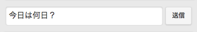

覚えさせた言葉を消しても良いですか
この操作は取り消せません
いいえ 忘れる話し相手がいない時。ちょっと寂しい時に。
こいつのことを思い出してやって下さい。
作者と同じで流行りの言葉や、カタカナは少し苦手です。
わからなかったら、そっと教えてあげましょう。
トークでは、画面下の入力欄に言葉を入れて送信すれば、自動で言葉が返ってきます。

※表示や動作がおかしくなった時はリロードして下さい。
このボタンがトーク画面右上に表示されていれば使用できます。
トーク画面の右上のボタンを押すと学習機能のウィンドウが表示されます。
※覚えた単語はお使いの端末、かつ、お使いのブラウザのみに保存されます。
覚えさせた言葉を消したい時に使用して下さい。『忘れる』ボタンを押すと、覚えた言葉を全部忘れます。
また、『忘れる』を行っても表示や動作が治らない場合に『初期化』してください。
学習機能で
『忘れちゃった』→『大丈夫か？』
では、『忘れた……』という言葉には反応できません。
しかし
覚醒モードなるものを搭載しています。
この順番で送信して『覚醒する』を押すと覚醒モードに移行します。
途中で『ぷしゅう……』と返ってきた場合は失敗です。１から始めましょう。
| 名前 | jinko |
|---|---|
| 初期単語 | |
| 覚えた単語 | |
| 作者 | ゆーちゃん (@blue928sky) |
| 最終更新日 | 2014年07月22日 |
| バージョン | 1.0.0 |
| 更新内容 |
１番目の数字
・システムの大幅変更など。
２番目の数字
・大きなバグの修正。
・UIの変更など。
３番目の数字
・小さなバグの修正。
・初期単語の追加など。
※動作は最新版に付随して変更されるため、アーカイブの動作の保証はできません。